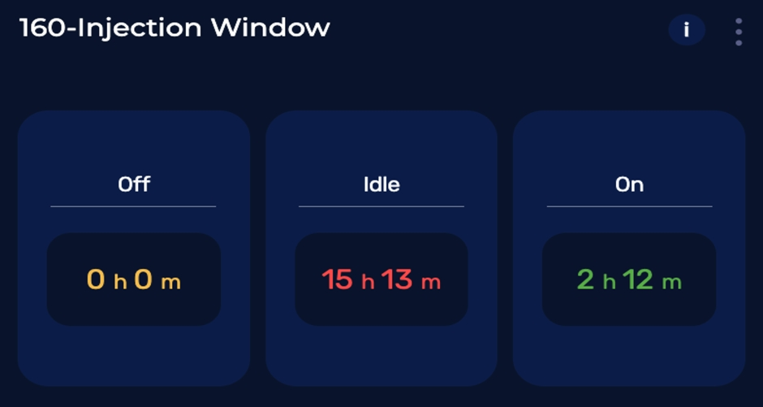

Feature Release
7th March 2023
- Feature: Weather API
Status: Completed full integration with ABC API.
What's new?
-
Air quality metrics: AQI, PM10, PM2.5, NO2, SO2, CO, O3, NH3, NO and Pollen level.
-
Atmospheric conditions: Temperature, Humidity, Wind Gusts, Wind Speed, Wind Direction.
-
- Feature: Table Widget
Status: Parameters can now be tracked at an equipment level.

What's new?
-
Users can now track On, Idle and Off time for each equipment.
-
Fully customizable parameters and ranges according to client needs.
-
-
Feature: Carbon Intensity API
Status: Completed API integration with UK regional Carbon Intensity forecast.

What's new?
-
Powered by ML algorithm to forecast carbon intensity and generation mix 96+ hours ahead for the 14 geographical regions that comprise Great Britain.
-
Clients can now schedule and minimise CO2 emissions at local level.
-
Applies to electricity generation only. It includes emissions from all large-metered power stations, interconnector imports, transmission and distribution losses, and accounts for national electricity demand, embedded wind, and solar generation.
-